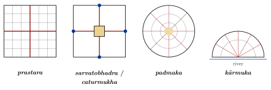
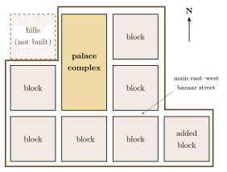

Chapter 8: Town Planning: Villages, Towns and Cities¶
8.1 Introduction¶
South Asia has a long history of planned settlements, from the Harappan cities of the 3rd millennium BCE to Jaipur in the 18th century and Chandigarh in the 20th. But “planning” meant very different things at different times. Some cities were laid out on a regular plan from the start; many more grew around a fort, a palace, a temple, a shrine or a market, and were reorganised by successive rulers. The texts describe idealised plans, which real towns resemble only in part. This chapter looks first at the textual prescriptions and then at the evidence of particular cities.
8.2 The Texts¶
8.2.1 The Arthaśāstra¶
The Arthaśāstra (composite, c. 50 BCE–300 CE; traditionally attributed to Kauṭilya and dated c. 300 BCE) describes the building of a fortified capital (book 2, chapters 3–4) (Olivelle 2013; Kangle 1965). The text prescribes that it be built at a suitable site, such as the confluence of rivers or the bank of a lake, and surrounded by three moats, of 14, 12 and 10 daṇḍas in width, an earthen rampart and a wall with towers and gates. Within, three royal roads running east–west and three running north–south divide the city into blocks. The royal palace is placed north of the centre, and the text assigns quarters to particular groups (2.4): priests, ministers and temples to the north; merchants, artisans, soldiers and others to their specified places; brāhmaṇas, kṣatriyas, vaiśyas and śūdras to the north, east, south and west respectively; and heretics and the caṇḍālas, regarded as untouchable, to the area outside, near the cremation ground. The Arthaśāstra thus shares with the vāstu texts the practice of writing the hierarchy of caste into the plan of a settlement (Chapter 1, Section 1.6, and Chapter 10, Section 10.3).
The Arthaśāstra distinguishes four kinds of fort by their natural defences: forts protected by water, by mountains, by desert and by forest. The Manusmṛti (7.70) gives a list of six, adding forts of earth and forts defended by men.
8.2.2 The Vāstu Texts¶
The Mayamata, the Mānasāra and other texts describe the planning of villages (grāma) and towns (nagara, pura) on the vāstupuruṣamaṇḍala, with a temple or a hall at the centre, streets on the lines of the grid, and quarters for different castes and occupations arranged in the zones of the grid (Chapter 2) (Dagens 1994; Acharya 1934). The Mānasāra names eight types of village plan, which also serve for towns (Table 8.1; four are drawn in Figure 8.1):
| Name | Form |
|---|---|
| daṇḍaka | “Staff”: a simple plan with streets crossing at right angles |
| sarvatobhadra | “Auspicious on all sides”: a square plan with a temple at the centre |
| nandyāvarta | Named after an auspicious figure; streets arranged around a centre in a swastika-like pattern |
| padmaka | “Lotus”: a plan with radiating divisions |
| svastika | Named after the swastika; streets in a cross pattern with diagonal elements |
| prastara | “Spread out”: a rectangular or square grid |
| kārmuka | “Bow”: a curved plan for a site on a river or the sea |
| caturmukha | “Four-faced”: a plan with four main gates and cross streets |

How far these prescriptions guided real settlements is an open question. Brāhmaṇa villages granted by kings in South India (agrahāra, brahmadeya) were often laid out with a temple and parallel streets, and temple towns were organised around the temple (below); but most villages grew organically, and the eight plan types cannot be matched one-to-one with surviving towns.
8.3 The Harappan Cities¶
The cities of the mature Harappan or Indus civilisation (c. 2600–1900 BCE) are among the earliest planned cities in the world (Kenoyer 1998; Possehl 2002; Wright 2010). Mohenjo-daro in Sindh, the best known, covered some 200 hectares or more. It consisted of a raised western mound, often called the “citadel”, and a larger lower town, both built on massive platforms of mud brick to raise them above the floods of the Indus. Main streets ran roughly north–south and east–west, dividing the lower town into large blocks, within which lanes gave access to houses. The houses, of baked brick of standardised proportions (commonly 1:2:4), were built round courtyards, with bathing platforms, latrines and, in many cases, private wells; drains from the houses ran into covered drains along the streets, provided with soak pits and covers for cleaning. Several hundred wells have been recorded. On the citadel mound stood the “Great Bath”, a watertight brick tank about 12 by 7 metres and 2.4 metres deep, sealed with bitumen, and a large building usually called the “granary”, whose function is disputed. Population estimates for the city vary widely, typically from about 40,000 upwards.
Harappā in Punjab had a similar arrangement of mounds. Its so-called “granary” too has been reinterpreted by some archaeologists as a hall.
8.3.1 Dholāvīrā¶
Dholāvīrā, on an island in the Rann of Kachchh in Gujarat, occupied from about 3000 to 1500 BCE and inscribed as a UNESCO World Heritage Site in 2021, differs from the cities of the Indus plain. It is built largely of stone, and it is divided into a “castle”, a “bailey”, a “middle town” and a “lower town”, each walled. Its excavator, R. S. Bisht, interpreted a large open area between the castle and the middle town as a ceremonial ground. Most striking is its water system: a series of large reservoirs, partly cut into the rock, and dams and channels to capture the runoff of two seasonal streams, in a region of very low rainfall. Near the north gate of the castle were found ten large Harappan signs, made of inlaid gypsum, which may once have been mounted over the gate.
8.3.2 Lothal¶
Lothal in Gujarat, a smaller Harappan town with a bead-making workshop and a warehouse, has a large brick-lined basin, about 214–219 metres long and 35–37 metres wide (published figures vary), which its excavator S. R. Rao interpreted as a dockyard connected to an estuary (Rao 1973). This interpretation has been widely repeated but is contested: others, notably Lawrence Leshnik, have argued that the basin was a reservoir for fresh water. Its function, dock or reservoir, remains debated (Leshnik 1968). Lothal certainly took part in long-distance trade, but it should not be described without qualification as the world’s earliest dockyard.
8.3.3 Who Planned the Harappan Cities?¶
The regularity of Harappan cities, their standardised bricks and weights, and their shared material culture over a very large area have suggested to some archaeologists a powerful central authority, perhaps a state with kings and priests. Others point out that there are no palaces, royal tombs or monumental temples of the kind found in Mesopotamia and Egypt, and argue for a more decentralised society, perhaps governed by councils of merchants, landowners and religious specialists, in which shared conventions were maintained by trade and custom rather than by a single ruler. The absence of readable texts makes the question hard to settle (Kenoyer 1998; Possehl 2002; Wright 2010).
8.3.4 Continuity?¶
How much the Harappan experience passed into later Indian urbanism is uncertain. The cities were largely abandoned by the early 2nd millennium BCE, more than a thousand years before the cities of the Gaṅgā valley and the earliest town-planning texts. Similarities, such as orthogonal planning and attention to drainage, can be explained by common needs as well as by transmission, and no direct line of descent has been demonstrated.
8.4 Early Historic Cities¶
The second urbanisation of South Asia began in the Gaṅgā valley around the middle of the 1st millennium BCE (Coningham and Young 2015). Its cities, such as Kauśāmbī, Śrāvastī, Rājagṛha and Pāṭaliputra, were surrounded by massive ramparts and moats. The Greek envoy Megasthenes (c. 300 BCE), quoted by later writers, described Pāṭaliputra, the Mauryan capital, as a long city defended by a timber palisade and a moat; excavations at Bulandibagh in Patna have found remains of such a palisade, and at Kumrahar the remains of a great pillared hall. At Taxila in the north-west the city of Sirkap, laid out under Indo-Greek rule in the 2nd century BCE, has a main street with regular cross streets, houses, shrines and a stūpa. These cities show that fortification and regular street plans were known, but none corresponds exactly to the ideal city of the Arthaśāstra.
The best-preserved early historic fortified city is Śiśupālgaṛh near Bhubaneswar in Odisha, occupied from about the 5th century BCE to the 4th century CE. Its earthen ramparts, later faced with brick and laterite, enclose an almost square area of more than a square kilometre, with two monumental gateways on each side, arranged roughly symmetrically; the gates were elaborately defended. Excavations since the 1940s, and more recent surveys, have revealed a dense city within the walls, with a group of stone pillars at its centre. Its regular, gated square plan is the closest archaeological parallel to the ideal cities described in the texts (Coningham and Young 2015).
8.4.1 Life within the Walls¶
Excavated early historic towns show houses of mud brick and baked brick with tiled roofs, ring-wells and soak-pits lined with terracotta rings, drains, workshops for beads, shell, iron and pottery, and shrines. Literary sources, in Pali, Sanskrit and Tamil, describe streets of particular crafts, markets, assembly halls, parks and pleasure gardens, and the gates and watchtowers of the walls. The Tamil poems of the Caṅkam anthologies and the epic Cilappatikāram describe the port of Pukār (Kāvirippūmpaṭṭiṉam) and the city of Madurai, with their streets of merchants and artisans and quarters for foreign traders.
8.4.2 Ports¶
Coastal trading towns, linked to the Roman world, the Persian Gulf and Southeast Asia, formed another kind of early city. At Arikamedu near Pondicherry, excavated by Mortimer Wheeler in 1945 and later by Vimala Begley, Roman amphorae and fine wares found alongside Indian pottery and beads show a trading settlement active from about the 2nd century BCE to the 2nd century CE. Excavations at Pattanam in Kerala, which some identify with the port of Muziris described in Roman sources, and at sites on the Gujarat and Bengal coasts have added to the picture. These ports had warehouses, wharves and craft quarters, and their populations included foreign merchants.
8.5 Temple Towns¶
In South India, many towns grew around great temples, and the temple shaped the plan of the town. The concentric enclosures of the temple were extended outwards by streets, often called in Tamil māḍa vīdhi or ratha vīdhi, along which the deity’s chariot was drawn at festivals; brāhmaṇa households, temple servants and merchants lived along them in an order that reflected their status and their role in the temple. Crispin Branfoot has shown how the processional festivals of the Nāyaka period, in which images left the sanctum to visit the halls, tanks and streets of the town, shaped both the architecture of the temple and the plan of the town around it (Branfoot 2007).
-
Madurai: the streets form concentric rectangles round the Mīnākṣī–Sundareśvara temple and are named after the Tamil months in which processions pass along them (Chapter 5).
-
Śrīraṅgam: the temple of Raṅganātha, on an island in the Kāverī, has seven concentric enclosures with twenty-one gateways; the outer enclosures contain streets of houses and shops, so that the town lies within the temple. Its huge outer gateway (rājagopuram), left unfinished for centuries, was completed only in 1987.
-
Chidambaram, Tiruvaṇṇāmalai, Kāñcīpuram and Kumbakonam are other towns whose plans are organised by temples and their processional routes.
8.6 Pilgrimage Towns¶
Many Indian towns grew up around places of pilgrimage (tīrtha): at river crossings and confluences, on sacred hills, and at the sites of famous temples, shrines of saints and tombs. Their form was shaped by the movement of pilgrims: processional routes, bathing places, rest-houses (dharmaśālā), markets for offerings, and the houses of the priests and guides who served the pilgrims and kept their family records. Vārāṇasī (Kāśī), on the Gaṅgā, is the most famous: its riverfront of stone steps (ghāṭ), built mostly from the 18th century onward by rulers and nobles from all over India, is lined with temples, palaces and monasteries, and behind it lies a dense maze of lanes (Eck 1982). At Puri, the broad processional avenue (baḍa daṇḍa) along which the chariots of Jagannātha are drawn each year links the temple with a second shrine some three kilometres away. The Jain temple cities of Śatruñjaya and Girnār, the Buddhist holy places, and the Sufi shrines (dargāh) of Ajmer, Delhi and many other towns, with their courts, gateways and kitchens, have shaped their surroundings in similar ways.
8.7 Vijayanagara (Hampi)¶
Vijayanagara, “the city of victory”, on the Tuṅgabhadrā river in Karnataka, was the capital of the empire of the same name from the mid-14th century until its sack in 1565, after the battle of Tālikoṭa; the empire continued elsewhere until the mid-17th century. Its ruins, at and around the village of Hampi, were inscribed by UNESCO in 1986. Contemporary visitors, such as the Persian envoy ʿAbd al-Razzāq in the 1440s and the Portuguese Domingo Paes and Fernão Nunes in the 16th century, described a very large and wealthy city with seven lines of fortification; modern estimates of its population vary widely (Fritz and Michell 1991).
Archaeologists distinguish a “sacred centre” around the Virūpākṣa temple and other temples near the river, with long colonnaded bazaar streets running from their gateways, and a “royal centre” to the south, with palace platforms, audience halls, enclosures for the royal women, stepped tanks, and buildings such as the Lotus Mahal and the elephant stables, whose arches and domes derive from the architecture of the Deccan sultanates. The city was supplied by canals drawing water from the Tuṅgabhadrā, aqueducts and tanks. The arrangement of the city followed the rocky landscape and its sacred associations, especially with the Rāmāyaṇa, rather than a single geometrical plan. Its temples are described in Chapter 5 (Section 5.6.9), the borrowings of its courtly buildings from the sultanates in Chapter 6, and its canals, aqueducts and tanks in Chapter 9 (Michell 1995).
8.8 Sultanate and Mughal Cities¶
The Sultanates and the Mughals founded or refounded many cities: the successive cities of Delhi (among them Sīrī, Tughluqābād and Fīrūzābād), Ahmadābād (1411), Bīdar, Gulbarga, Bījāpur, Golconda and Hyderabad (1591) in the Deccan, Fatehpur Sīkrī and Shāhjahānābād. Their characteristic elements were the fortified citadel or palace, the congregational mosque, the bazaar street and the walled garden, with residential quarters (in Gujarat the pol, a gated street of houses) often organised by community or occupation (Asher 1992).
-
Fatehpur Sīkrī (1571–c. 1585), Akbar’s capital near Agra, was built on a ridge beside a lake, with the palace and the great mosque on the top of the ridge and the town below; it was largely abandoned after Akbar moved his court in 1585 (Brand and Lowry 1985). The site was chosen because the Sufi Shaikh Salīm Chishtī, who had predicted the birth of Akbar’s heir, lived there. The palace is not a single building but a sequence of courts and pavilions, aligned on a common grid but not symmetrically: a public audience hall (Dīwān-i ʿĀmm) with a great court, the private audience hall (Dīwān-i Khāṣṣ), the treasury, the five-storeyed open pavilion (Pañch Mahal), a square tank with a central platform (Anūp Talāo), and the residential palaces of the women of the household, of which the largest is the so-called palace of Jodh Bāī. The great mosque, with the marble tomb of Salīm Chishtī in its court, is entered from the south through the Buland Darwāza. The reasons for the abandonment of the city, whether shortage of water or the political needs of a moving court, are debated.
-
Shāhjahānābād (begun 1639), the walled city of Old Delhi, was laid out by Shāh Jahān with the Red Fort on the Yamunā, the Jāmiʿ Masjid on a natural rise, and two great bazaar streets, one of them Chāndnī Chowk, along which a canal ran. Its plan has been interpreted as a deliberate expression of Mughal ideas of sovereignty (Blake 1991).
-
Golconda, the Quṭb Shāhī fortress city, was surrounded by massive walls and its citadel rose on a granite hill. Visitors are still shown how a hand-clap at the entrance gate can be heard at the top of the citadel.
-
Bīdar is notable for its kārīz, underground channels that collect groundwater, a technique of Iranian origin.
8.9 Hill Forts and Sea Forts¶
Fortresses were among the largest building works of pre-modern India, and the Arthaśāstra’s classification of forts by their natural defences (above) reflects a real strategic tradition. In the Deccan, rulers from the Sātavāhanas to the Marathas fortified the flat-topped hills of the Western Ghats, cutting cisterns into the rock to store the monsoon rain for the dry season. Daulatabad (Devagiri), the Yādava capital raided by ʿAlāʾ al-Dīn Khaljī in 1296 and annexed by the Delhi Sultanate in 1318, has an isolated rock scarped all round, a moat and a tunnel entrance. In the 17th century the Maratha king Śivājī built or rebuilt a network of hill forts, among them Rajgad and Raigad, and sea forts on islands off the Konkan coast, such as Sindhudurg (1664–1667) and the earlier Janjira of the Siddis. In Rajasthan, Chittorgarh, Kumbhalgarh, Ranthambore and Jaisalmer combine walls, palaces, temples and water tanks within their circuits (Chapter 7). These forts were often towns in their own right, with markets, temples, mosques and houses, and their water systems were as important as their walls.
8.10 Jaipur¶
Jaipur was founded in 1727 by the Kachhwāhā ruler Savāī Jai Singh II, who moved his capital from the hill fort of Amber to the plain below. Jai Singh, who also built the astronomical observatories known as Jantar Mantar, worked with the architect Vidyādhar Bhaṭṭācārya, a Bengali brāhmaṇa in his service. The city is laid out on a grid of large rectangular blocks (chokrī) separated by broad bazaar streets, with the palace complex occupying the centre of the northern part. The grid is not aligned to the cardinal directions but turned by about fifteen degrees, probably to suit the lie of the land. Because the hills to the north-west prevented the completion of one block of a nine-block arrangement, an extra block was added at the south-east.
The plan of Jaipur has often been explained as a direct application of a nine-square vāstu maṇḍala, with the palace at the sacred centre. Vibhuti Sachdev and Giles Tillotson have shown that the evidence is more complicated: the city combined traditional ideas of auspicious planning with the practical needs of a commercial capital, Mughal precedents and the specific site, and its regular form owes as much to its development by the court as a planned trading city as to any text (Sachdev and Tillotson 2002). See Figure 8.2.

8.11 Delhi: A City of Many Cities¶
Delhi illustrates how Indian capitals were repeatedly refounded. Tradition counts “seven cities” of Delhi, but the real number of successive settlements is larger. The earliest fortified city to survive in part is Lāl Kot, associated with the Tomar Rajputs, enlarged by the Cauhāns as Qilʿa Rāi Pithorā; the Delhi sultans made it their first capital, building the Qutb mosque within it (Chapter 6). ʿAlāʾ al-Dīn Khaljī built a new walled city at Sīrī (c. 1303) and the great reservoir of Ḥauẓ Khāṣ; Ghiyāth al-Dīn Tughluq built the massive fortress city of Tughluqābād (1320s); Muḥammad bin Tughluq enclosed the space between the older cities as Jahānpanāh; and Fīrūz Shāh Tughluq founded Fīrūzābād on the Yamunā, where he set up an Aśokan pillar brought from Topra. The Mughal emperor Humāyūn and the Sūr ruler Sher Shāh built Dīn Panāh, the Purānā Qilʿa; Shāh Jahān founded Shāhjahānābād (1639); and the British built New Delhi (1911–1931; Chapter 7, Section 7.2.4). Each new city reused materials, sites and water sources of its predecessors, and their ruins, tombs and mosques now lie scattered across the modern metropolis (Table 8.2).
| City | Date | Builder and notes |
|---|---|---|
| Lāl Kot, Qilʿa Rāi Pithorā | 11th–12th c. | Tomar and Cauhān Rajputs; first capital of the Delhi sultans |
| Sīrī | c. 1303 | ʿAlāʾ al-Dīn Khaljī |
| Tughluqābād | 1320s | Ghiyāth al-Dīn Tughluq |
| Jahānpanāh | 1320s–1330s | Muḥammad bin Tughluq; walls joining earlier cities |
| Fīrūzābād | 1354 | Fīrūz Shāh Tughluq, on the Yamunā |
| Dīn Panāh (Purānā Qilʿa) | 1530s–1540s | Humāyūn and Sher Shāh Sūr |
| Shāhjahānābād | 1639 | Shāh Jahān; Red Fort and Jāmiʿ Masjid |
| New Delhi | 1911–1931 | British imperial capital |
8.12 Neighbourhoods¶
Within the walled cities of the Sultanate and Mughal periods, and in older cities generally, most people lived in neighbourhoods organised by community, caste or occupation. In Ahmadābād, the pol was a street or group of streets of houses, entered through a single gate that could be closed at night, inhabited by families of one caste or occupation and managed by its own council; each pol had its shrines, wells, and bird-feeders (cabūtrā). Old Delhi was divided into mohallas and kaṭrās, and similar arrangements are found in many old cities. These neighbourhoods combined dense, shaded housing with shared spaces and strong local institutions, and their social structure reflected the divisions of caste and community.
8.13 Colonial and Modern Cities¶
The colonial port cities of Madras (founded 1639 around Fort St George), Bombay (developed by the East India Company from the 1660s) and Calcutta (from 1690) grew in a new pattern: a fort and a European “white town” beside a much larger and denser Indian “black town”, with markets, temples, mosques and neighbourhoods of merchants and artisans who came to trade with the Company. In the 19th century they acquired docks, railways, mills, broad avenues, public buildings and parks, together with crowded tenements and slums, and became the largest cities of India.
Colonial rule also brought other new kinds of planned settlement: the cantonments and “civil lines” laid out beside older Indian towns; hill stations; railway colonies; and the new imperial capital of New Delhi, whose avenues and vistas centred on the Viceroy’s House are described in Chapter 7 (Section 7.2.4) (Metcalf 1989). After independence, new capitals were built for Punjab at Chandigarh (Section 7.3.1), on a grid of self-contained sectors, and for Odisha at Bhubaneswar, planned by Otto Koenigsberger. These cities drew on international modernist ideas rather than on the vāstu texts, although their designers often described their work in terms of Indian climate and ways of life. Since the 1990s, new planned towns, special economic zones and “smart cities” have continued the tradition of planning from above, alongside the unplanned growth that accounts for most of India’s urbanisation.
8.14 Plans and Cities¶
The cities of this chapter show the distance between the planned city of the texts and the cities that were actually built. Only a few, Śiśupālgaṛh, Jaipur and the colonial and modern capitals among them, were laid out on a regular plan from the start, and even Jaipur, so often explained as a vāstu maṇḍala, turns out on examination to owe as much to its site, its court and its trade. Most cities grew around a fort, a temple, a shrine or a market, and were reshaped by water, defence and the movement of processions. What the texts and many real cities do share is an ordering of space by social rank, in which caste and community decided where people could live. The qualities that modern planners admire in old Indian towns, compact neighbourhoods, mixed uses and shaded streets, are real, but they were the product of particular histories rather than of a single ancient science of planning.
Further Reading¶
-
Kenoyer, Jonathan Mark. 1998. Ancient Cities of the Indus Valley Civilization. Oxford University Press and American Institute of Pakistan Studies.
-
Coningham, Robin, and Ruth Young. 2015. The Archaeology of South Asia: From the Indus to Asoka, c. 6500 BCE–200 CE. Cambridge University Press.
-
Fritz, John M., and George Michell. 1991. City of Victory: Vijayanagara, the Medieval Hindu Capital of Southern India. Aperture.
-
Blake, Stephen P. 1991. Shahjahanabad: The Sovereign City in Mughal India, 1639–1739. Cambridge University Press.
-
Sachdev, Vibhuti, and Giles Tillotson. 2002. Building Jaipur: The Making of an Indian City. Reaktion Books.
-
Possehl, Gregory L. 2002. The Indus Civilization: A Contemporary Perspective. AltaMira Press.
-
Wright, Rita P. 2010. The Ancient Indus: Urbanism, Economy, and Society. Cambridge University Press.
-
Olivelle, Patrick. 2013. King, Governance, and Law in Ancient India: Kauṭilya’s Arthaśāstra. Oxford University Press.
-
Eck, Diana L. 1982. Banaras: City of Light. Alfred A. Knopf.
-
Metcalf, Thomas R. 1989. An Imperial Vision: Indian Architecture and Britain’s Raj. University of California Press.